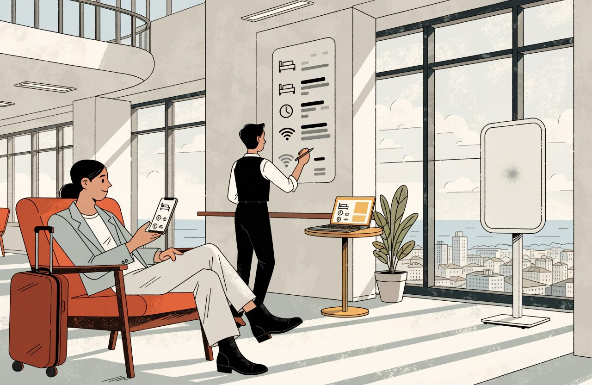
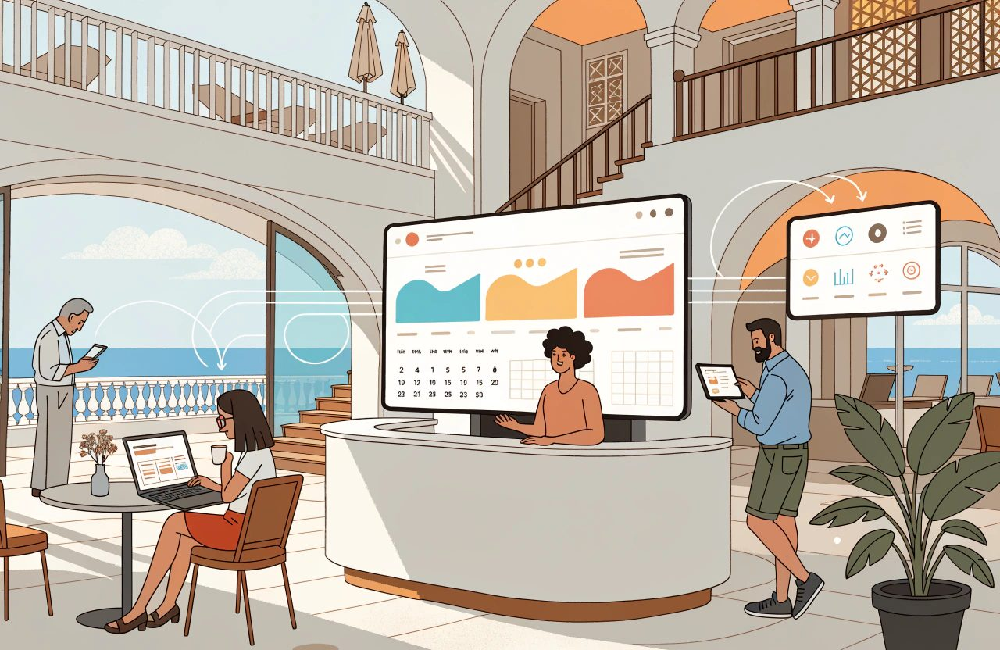
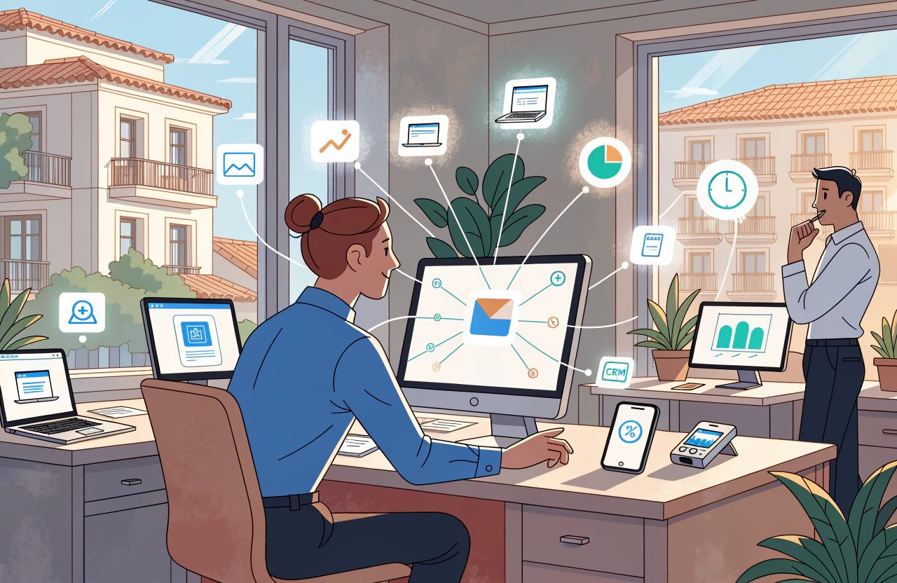
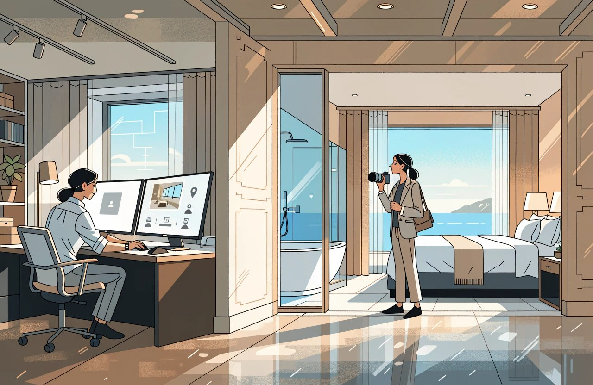
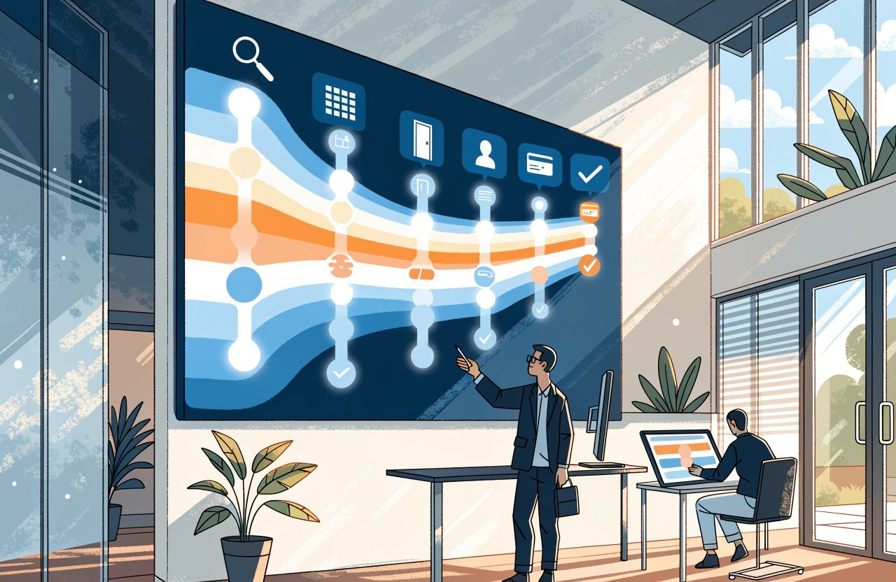
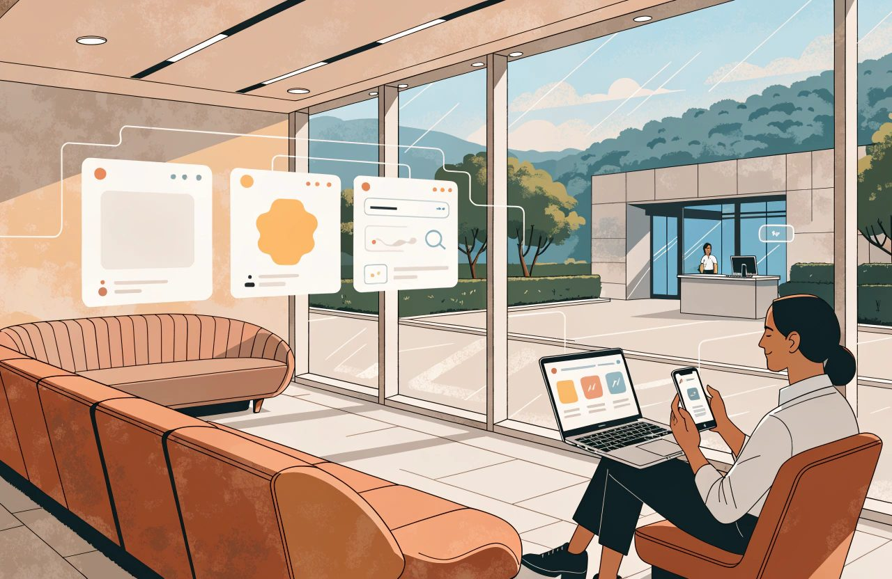
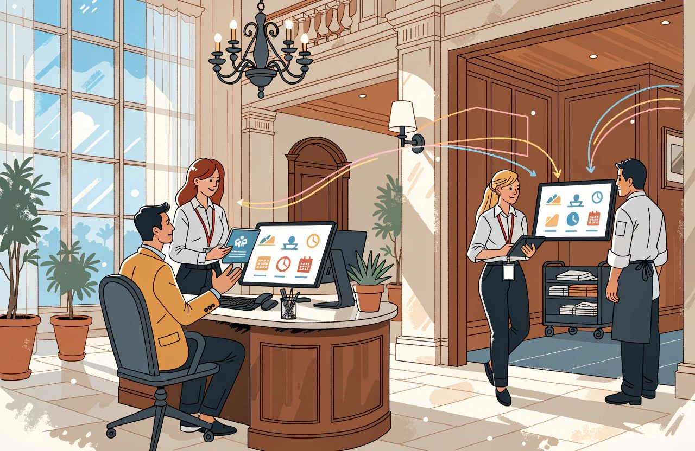

Hotel technology guide
The Complete Guide to Direct Booking and Hotel E-commerce

A hotel director once showed me a channel report to prove his direct business cost him nothing.
The report had a commission column.
The direct row was empty.
Case closed, he said.
That is the gap.
Commission is not the only cost attached to a single booking. Card processing fees are attached to a booking. So are the fees your booking engine charges per reservation. So are the charges from price comparison sites, billed after the guest has stayed. What makes commission different is where it lands. It lands inside the channel report. That is the place you were already looking, with the booking reference printed on it.
Every other cost that produced that booking arrived somewhere else.
The website. The booking engine fee. What you spent on comparison sites and on ads against your own hotel name. The customer relationship management system, the CRM, that holds your guest records. The payment charges. The salary of the person who watches all of it.
Those invoices arrive in different months, from different suppliers. They get filed under marketing or overheads.
The booking never sees them.
Your accounts are not making a mistake here. It is worth saying so before the financial controller stops reading. The standard hotel accounting rules put commission in the rooms department and marketing in a separate line, on purpose. Those rules are the Uniform System of Accounts for the Lodging Industry, the USALI, now in its 12th Revised Edition and effective from 1 January 2026. That keeps departmental profit comparable between hotels. The accounts are answering a different question, and answering it correctly. Which is exactly why you have to build a cost-per-channel view alongside them. You cannot read one out of them.
Direct bookings are not free. Their costs are just spread out.

That is a completely different thing.
Confusing the two is one of the most expensive habits in hotel e-commerce.
Now the part that took me longer to accept than it should have. On the best large-sample evidence anyone has published, direct is usually the cheaper channel. Not the more expensive one. Kalibri Labs, working across US hotel data, put the total cost of winning a booking at roughly 16 to 18 per cent of what guests paid. Direct and loyalty came in near 10.7 per cent. Business from an online travel agency, an OTA, came in around 17.4 per cent. That data is US-heavy and weighted towards chains, so do not lift it onto an independent hotel in Europe. But it is the largest measurement in either direction. And it does not support the idea that direct usually costs more.
The gap is narrower than the headlines suggest, though. The commission European OTAs actually collected averaged about 9.7 per cent in 2024. Not the 15 to 25 per cent people argue about in meetings. So think of a hotel with heavy ad spending, an agency on a monthly fee, and a website that turns few visitors into bookings. It can genuinely pay more per direct booking than an OTA would have charged. That is a real risk and I have seen it. It is just not the normal case. Which is the entire point. You cannot tell which case you are in without counting.
So set the goal properly.
It is not zero commission.
It is profitable demand that you control, can measure and can grow. Sometimes that means paying for a click. Sometimes it means paying an OTA and being glad you did. It always means knowing the real number.
One word in that sentence needs care. "Own" means you hold the relationship and you make the decisions. It does not mean you own a person. Their data stays theirs, and data protection law still protects it wherever they live. What you own is the ability to reach them again without paying somebody else for permission.
This guide splits the subject into five parts: the website, the booking engine, paid acquisition, what you sell once the guest is on your own pages, and how all of it reads to machines as well as people.
Direct is a system, not a campaign.
The Short Version
- Direct bookings are not free. Their costs are spread across the website, the booking engine, paid clicks, the CRM, payment charges and staff time. Only commission lands inside the channel report.
- Kalibri Labs put the total cost of winning a booking near 16 to 18 per cent of guest spend. Direct and loyalty came in around 10.7 per cent. OTA business came in around 17.4 per cent.
- The goal is not zero commission. The goal is profitable demand you control, can measure and can grow. Sometimes that means paying an OTA and being glad you did.
- A booking engine should be measured stage by stage. Search, results, selection, details, payment and confirmation each fail for different reasons. A single conversion percentage hides where the wound is.
- Metasearch pricing changed in 2025. Google withdrew commission bidding for hotels entirely. Trivago moved Rate Connect to commission on stays only. Put a date on everything you read about this.
- Brand search defence depends on who else is bidding. Where competitors bid on your name and you do not, they take 18 to 42 per cent of the clicks. Where nobody bids, you buy very little.
- Machine readers need facts, not charm. Say the same thing on every surface you publish, and put important facts in the page as plain text. Consistency is necessary. It is not sufficient.
Website and Content
Your hotel website has one primary commercial job: convert.
That means turning a visitor into a booking.
The brand work, the storytelling, the awards and the general manager's welcome letter can all matter. But in the booking journey they either help the guest make the decision, or they are furniture.
That is a statement of priority, not a denial. The same site carries your restaurant covers, your spa bookings, your job adverts and your meetings enquiries, and all of that is real work. It also carries a lot of checking-up traffic. Guests find you on an OTA or a comparison site, come to your website to see whether you are real, then go back and book there. Those visits converted. Your website reports will never show it. Keep that in mind before you judge a page by its own booking rate.
Conversion here means something specific.
A guest arrives with questions they may not have fully put into words:
Is this the right hotel for the trip I am planning? Can I trust these people with my money?
Content converts when it answers those questions faster than the alternatives do.
Beauty helps. Clarity closes the sale.
Consider the difference between two room descriptions.
- "Superior Double Room. 25 square metres. Air conditioning, minibar, safe, LCD television, free wireless internet."
- "Superior Double Room. 25 square metres on floors three to five, with a side sea view over the pool terrace. Sleeps two adults, or two adults and one child on a sofa bed. The bathroom has a walk-in shower, not a bath."
The first is a spec sheet.
The second helps close the sale. It also prevents a complaint on arrival day, which is a second payoff most hotels never count.
Write content that answers objections, not content that merely lists features.

Detail Is a Promise
Accessibility rules vary by country and they move. What follows is how I read the general position, not legal advice for your hotel. Check where you actually stand before acting on any of it.
Two conditions attach to that. Detail is a promise, so only describe what every room in the category actually has. Say the rooms in a category are not all the same. Then "floors three to five with a side sea view" creates exactly the complaint it was written to prevent. And for accessible rooms this stops being a booking tip. In several markets a reservation system is expected to identify and describe accessible features. The detail has to be enough for a disabled guest to judge for themselves whether the room works. In some countries that expectation is written into law, and it is enforced. It is good practice everywhere, whatever your own market happens to require. Find out which of the two you are dealing with before you decide how much detail to publish.
While we are on accessibility, one thing most European hoteliers have not been told. Under the European Accessibility Act, Directive (EU) 2019/882, a hotel booking flow counts as an online shop. E-commerce services are brought into scope by Article 2(2)(f). Member states have had to apply the measures since 28 June 2025. Article 4(5) of that directive exempts microenterprises providing services from the accessibility requirements set out in Article 4(3). The thresholds normally applied to a microenterprise are under ten staff, with turnover or a balance sheet total under two million euros. That covers a large share of independent hotels. Both halves matter. If you are exempt, know it, and know why. If you are not, your booking engine is in scope, and your supplier's answer to that is worth having in writing. Member states set their own enforcement and their own penalties under the directive. So the position that actually applies to you is a national one, and it is worth confirming locally.
Mobile Is the Default Surface
Mobile is not the smaller version of your website.
It is the default surface. Roughly seven in ten visits to hotel websites now arrive on a phone.
Then the second number, which changes what you do about the first. Phones are a minority of the money. A large study across many properties put mobile at about 42 per cent of online direct revenue for 2023, up from 36 per cent five years earlier. Desktop still converts a lot better. That gap is the argument, not a hole in it. It says the phone is where demand shows up and where it leaks away. Treat the desktop layout as the variant and you will make better decisions about what survives. Fewer sliding image galleries. A visible price. A booking button you do not have to scroll past a video to find. Then load those pages on a mobile connection, away from the hotel wireless network, and time it. If the first real content takes longer than a guest's patience, nothing else in this guide matters.
Trust is earned before price is discussed. Photography that matches reality. Policies in plain sentences. A phone number a human answers. Those carry the sale. The phone number is not a website decision, though. It is a staffing decision. It is only worth publishing if somebody actually picks it up.
Booking Engine and Conversion
The booking engine is the shop counter.
It is also one of the least examined parts of the direct-booking system. It was chosen once, connected once and then treated as plumbing.
It can kill the sale.
Anything awkward in the final steps can undo everything you spent getting the guest there, and it does so silently.
Nobody complains about a booking they did not complete.
Measure the Booking Funnel by Stage
Break the booking into its real stages and measure each one separately. This is the model I use. It is not an industry standard. Your reporting tool will not lay it out this way, so set it up deliberately:
- Search: dates and occupancy entered.
- Results: availability and rates shown.
- Selection: a room and a rate chosen.
- Details: guest data captured.
- Payment: card or alternative method accepted.
- Confirmation: booking created and communicated.
Real booking flows break those lines, which is worth knowing before you build the report. A wallet checkout such as Apple Pay or Google Pay merges Details into Payment, because the wallet supplies the name, the email and the billing address. A pay-at-the-hotel or deposit-only booking takes Payment out as a transaction step and takes card details as a guarantee instead. Map your own flow first, then measure it.
A single conversion percentage tells you almost nothing.
Where guests drop out, stage by stage, tells you where the wound is.

Losing them between Results and Selection is usually a rate structure or room presentation problem. Losing them between Details and Payment is usually a form or payment method problem. Those are different repairs.
The word usually is doing real work there. A stage tells you where the guest left. It does not tell you why. Results to Selection also breaks on price, against the comparison screen the guest just came from. It breaks on rules that quietly remove options, such as a minimum stay or a block on arriving that day. And it breaks on where your traffic came from, because somebody arriving from a price comparison click behaves nothing like somebody arriving from your newsletter. Details to Payment also breaks on a card security check. It breaks on a deposit or cancellation term the guest is seeing for the first time. It breaks on a consent banner. Read the stage as a location, then go and look.
What Happens When the Search Returns Nothing
Consider the difference between two responses to the same dead end. A guest asks for three nights and your engine returns "No availability for the selected dates." They leave and search an OTA, which shows them an alternative. The better response offers the nearest available dates. Or the same stay in another room type. Or a shorter stay that fits.
But be careful how you argue it, because the usual version is wrong. It is normally said that you already hold that information, so not showing it is a choice. That is not reliably true. Searching across a range of dates is a much heavier request than checking a single stay. Where availability sits behind a central reservation system or a channel manager, that search may be capped or simply not offered. At least one well-known booking engine states plainly that it cannot show a guest the nearest available date. Your own rules can also make the shorter stay genuinely unbookable rather than merely unshown.
So this is often not a hotel choice at all. It is on your supplier's build plan, or it is not.
That makes alternative-date search a procurement question for the next contract review.
Ask whether it exists. Ask what it costs. Get the answer in writing.
Forms, Payments and Abandoned Bookings
Cut the guest details form to what you need to create the reservation and reach the guest. Every extra mandatory field is a tax on completion.
With one caveat that catches people out. Many countries require hotels by law to collect and report guest data. A few attach that duty to the booking rather than to arrival, and that is the version that reaches into your booking form. Spain is the example people cite. Reporting there has been enforced since the end of 2024. The deadline is commonly reported as 24 hours from the booking, not from arrival. The list of details is understood to include payment card information. Several other European countries, including Portugal, France and Italy, attach the duty at check-in instead. Where that is the case it does not reach the booking form in the same way. These are national rules and they change. Do not carry a deadline, a data list or another country's position across a border. Check what your own country requires, and check it with somebody local. The answer is sequencing, not surrender. Collect the minimum needed to create the booking. Then collect what the law requires in a step before arrival, where it costs you nothing.
Payments belong to conversion, not only to the back office. A missing payment method. A card form that breaks on a phone. A security check that ends on a blank page. Each one loses a booking for reasons that have nothing to do with your hotel.
Be careful with that security check specifically, though, because it is not only friction. When you take a card as a guarantee, the guest passes a check at that moment. It is called strong customer authentication, and it comes from the second Payment Services Directive, Directive (EU) 2015/2366. How the check has to be carried out is set out in Delegated Regulation (EU) 2018/389. That check is what makes your later charges stand up. You can charge a guest who books and never arrives, a no-show, or who cancels late, or who runs up extras. But only where that card permission was properly verified when it was set up. Engineer that step away in the name of a smoother booking and you have not removed a cost. You have moved it into the accounts, where it is larger and much harder to see.
That brings us to one of the most ignored assets in direct booking.
A guest who entered dates, chose a room and stopped at payment has told you more about their intent than almost any advertisement will. Following that up, politely and once, is some of the cheapest demand available to you.
Three things have to be true first, and most hotels have done none of them.
- You have to hold the email address. Most booking engines only ask for it at the payment step, which is after the point where most people leave. If you want to chase the guests who dropped out, the address has to be captured earlier in the flow, and deliberately.
- You have to be allowed to send it. This is the highest-risk operational advice in this guide and it varies by country. Europe lets you email your existing customers without asking first. That exception sits in the ePrivacy Directive, Directive 2002/58/EC, at Article 13. It applies only where you got the details in the course of a sale to that person. An abandoned booking is not a sale. Countries have implemented Article 13 differently, and some read it narrowly. In Spain the position is generally understood to require an existing contract with the person. Regulators in Germany have taken a stricter view, and in 2024 at least one held that email to people who abandoned a basket needs consent. The United Kingdom position is generally read as more permissive, and it is normally said that the opt-out has to be offered at the moment you collect the address. None of that is settled the same way in every market. Get an answer for your own markets before you switch this on.
- You have to run it properly. An opt-out where you collect the address. A list of people you must not contact. A record of what you sent to whom. That is not free. It is cheap relative to the booking, which is a different claim and the one I am actually making.
I have never seen a credible independent figure for how many hotels do this, or for how well it works when they do. Every recovery rate in circulation comes from a company selling recovery software. Treat it as a well-founded idea with no benchmark, and measure your own.
Metasearch and Paid Acquisition
Metasearch is the price-comparison layer.
It shows your direct rate beside OTA rates for the same hotel and dates, then sends the guest onward. In many cases the hotel has already been chosen.
What is being decided is who takes the booking.

Two edges to that definition. Some of these sites also work further up the journey. They show a list of hotels to somebody who has not chosen one yet. And the large platforms now sell ad formats reaching well beyond the comparison box. And the handover is not universal. Tripadvisor's instant book completed the transaction on its own site, although it stopped taking new hotels in November 2025. More interesting is August 2026. Google began testing an assistant in the US that books hotels inside the conversation, with Amadeus and Booking Holdings taking part. Google says it does not intend to run the transaction itself. At Booking Holdings, bookings made through chat assistants are under one per cent of nights sold. Watch it closely. Do not restructure around it yet.
How Metasearch Is Bought
Understand how you pay. There are three shapes, and they remain the right way to think about the subject. What changes fast is which platform offers which, so put a date on everything you read about this, including this.
- Cost per click, or CPC. You pay for the click whether or not it books.
- Cost per acquisition, or CPA, charged on stays. You pay a percentage after the guest has stayed. Lower risk, because cancellations and no-shows fall out of it.
- Mixed and managed deals. A blend of the two, usually with a target return attached.
As of August 2026 the two biggest platforms sit on opposite sides of that line. Google withdrew commission bidding for hotels entirely. It closed to new campaigns from April 2024, stopped serving on 20 February 2025, and settled the last stays in November 2025. Google gave the reason itself, which is that the model depended on third-party cookies. What remains there is target return on ad spend, enhanced CPC, manual CPC and percentage CPC. Trivago moved the other way. From 1 September 2025 its Rate Connect product is CPA only, with a minimum ten per cent net commission, payable after the guest has completed the stay.
If you take one thing from that, take this:
Anybody who tells you that commission-on-stay is a current Google Hotel Ads option has not opened the product since 2024.
Free Booking Links Matter
Now for the slot almost every article on this subject leaves out.
Google shows free booking links on the same panel as the paid ones. They cost nothing, your bids do not affect where they rank, and for plenty of independents they deliver more than the paid slot does. An article whose whole thesis is "count every cost" has no business ignoring the one that is zero.
Two conditions attached. Since 30 July 2025 you can no longer feed rates to Google yourself through a business profile. You need a booking engine, a central reservation system or a technology partner to push rates into Google's Hotel Center for you. And the free slot is not a stable asset. One European technology provider measured a 32 per cent fall in free booking link revenue for independent hotels in early 2024, against the year before. That is a supplier's own data, so hold it loosely, but plan for the direction. Free is a gift, not an entitlement.
One correction to a shorthand I have used myself. Paying a comparison site a percentage after the stay costs like a commission. It is not an OTA relationship. Under a metasearch CPA deal the click lands on your own booking engine. You are the seller: the guest pays you and the transaction is yours. You hold the guest record and the permission to contact them. Your cancellation policy applies. You have loaded no rate anywhere. That is the entire argument this guide makes two sections further down about owning your guest data, so do not give it away in a throwaway line. Compare the cost structures. Do not equate the relationships.
Defending Your Own Brand Search
Trademark rights and search advertising policies are national, and both change. What follows is how I read the general position, not legal advice for your hotel. Check where you actually stand before acting on any of it.
Then comes brand search, where the economics are more subtle than the usual advice suggests. Somebody types your hotel name into a search engine. They are not shopping, they are looking for you, and that moment is sold to whoever bids. The large search engines generally do not stop a competitor using your trademark as a keyword. Their own advertising policies usually allow it. Those policies also carry exceptions that let a reseller use your name in the ad text, and an OTA page showing your rates will often qualify. Trademark rights are national, and what you can do about any of this depends on the rights you actually hold. If you have no registered trademark, which is most independent hotels, your options are usually very limited. That is a question for a trademark adviser in the markets you sell to, not a question for your ad account.
Before you spend anything, find out who is actually bidding on your name. Use the auction insights report in your ad account. Check how often your ad shows. And search your own name by hand, on a phone and a desktop, in each market you sell to. That one check decides the whole question, and the research on it is unusually clear.
Where competitors bid on your name and you do not advertise, they take between 18 and 42 per cent of the clicks. Defending is strongly worth doing. Less famous brands gain more from defending than famous ones do, which favours an independent over a chain.
Where nobody is bidding, advertising on your own name buys you roughly one to four per cent more clicks. Count only the clicks you would not have had anyway and each one costs many times the headline click price. In round terms you pay for sixteen clicks to get one extra. Google's own analysis of hundreds of pause studies found that the extra gain halves when the advertiser already holds the top unpaid result. That is exactly your position on your own name. eBay's large field experiment found 99.5 per cent of the brand clicks it gave up came back through unpaid results. And the clicks a competitor takes are worse clicks. Between a fifth and a half bounce straight back within thirty seconds, against about seven per cent for clicks on your own listing.
The usual objection, that many of those guests would find you anyway, is stronger than I used to allow for. Where nobody else is bidding, most of them would. Where somebody is, a meaningful share would not, and defending is money well spent. The recommendation survives. The certainty does not, and what decides it is who else is bidding.
Measure Incremental Demand, Not Claimed Attribution
Then settle it by measuring, but measure the right thing.
Count all direct bookings, not just the ones the ad platform claims. That part matters and it is what most people get wrong. The platform's own count of which bookings its ads caused, and the estimates it fills in where consent is missing, both bend the comparison towards the ads.
The test design is harder than it looks, and this is one place where I would correct advice I have given before. Running a campaign, pausing it for a month and comparing the two periods is the weakest test available. A single hotel is close to the worst place to run it. The best study of the problem looked at 25 field experiments covering 2.8 million dollars of spend. The typical result had a margin of error over 100 percentage points wide. Telling a zero per cent return from a ten per cent return needed experiments 62 times larger. One property running one pause will almost always see no visible difference, and will read that as proof there is no effect. It is not. It is a test too small to see one. Guests book weeks ahead, so each period is polluted by the other, in both directions. And the OTAs' automated bidding will move into the auction you vacated on its own timetable, not yours.
Do one of these instead. Switch brand spend on and off in random blocks across a season, over six to twelve months, and compare the blocks. Or hold out one source market and compare it against the rest, allowing around forty days to settle. Or, if you have an account representative, use the platform's own lift test. If you cannot run one of those, do not run the short pause and treat the result as an answer. Decide it on the check of who is bidding instead, which is cheaper and tells you more.
Price Competitiveness and Feed Accuracy
The rules below vary by country and they move, and platform rules are not law. What follows is how I read the general position, not legal advice for your hotel. Check where you actually stand before acting on any of it.
Two conditions before you spend anything on these sites. Both are commercial, not legal. Neither is a rule anybody imposes on you, and one of them used to be, which is the part that has changed.
The first. You cannot afford to be more expensive than the OTAs on a comparison screen. A guest who sees your direct price higher than an OTA price does not conclude that the OTA is discounting. They conclude that you are more expensive, and you paid to teach them that.
What has changed is the law, and it has changed in your favour. The contract term that used to stop you undercutting an OTA is called a parity clause. The Digital Markets Act, Regulation (EU) 2022/1925, puts extra obligations on the largest platforms once they are designated as gatekeepers. The largest OTA group has been designated under it. Since 14 November 2024 it has had to let hotels offer better prices and conditions on their own channels. Courts and regulators across Europe moved the same way through 2024. They stopped treating parity clauses as an ordinary side term of the bargain. Several European countries go further and ban these clauses outright, and others reached the same result through their own courts. At least one country outside the European Union has banned them as well. Claims for the past are running too, and hotels in some markets have been allowed to group together and pursue damages. The direction of travel is not in doubt. Being cheaper on your own channels in Europe is far closer to a right you hold than to a breach you are risking. Which of those rules reaches your own contract depends on the market, the platform, and how the clause you signed is written. That is worth an hour of a competition lawyer's time in your own country.
"Must match" was never quite achievable anyway. Google formally supports rates that vary by device, location, language or whether the guest is signed in. It also puts other companies' rates alongside your listing, and you cannot change those at all. Booking.com's Genius programme is a members-only discount of ten to twenty per cent that you may well be funding. What appears on that screen is only partly yours to control. So match or beat where you can, know what you are looking at where you cannot, and stop treating parity as a duty.
The second condition is technical, and this one does have teeth. The rates and availability you send must be accurate and quick. This is not a legal duty. It is a platform participation rule, and the platform enforces it directly against your listing rather than through any regulator. That changes who enforces it, not whether you have to follow it. Sending a guest to an engine that contradicts the price they just clicked is worse than not appearing, and the platform agrees with you. Google grades price accuracy from excellent down to failed, and at failed it switches off all your ads and your free booking links. Between those points it lowers where you appear, suspends individual hotels and can suspend the account. Enforcement tightened in September 2025. Google publishes what it expects on speed too. Updates you send should be live within 15 to 20 minutes. Updates it comes and collects should be processed in around five minutes. On top of that it asks live price questions at the moment of the auction.
One further constraint belongs beside the booking engine section rather than here. Since February 2025, a booking flow reached from Google must show the final room and the final rate before it asks for personal details. It must not change the price after they are given. These are not laws. They are the platform's own participation rules, enforced by the platform rather than by a regulator. If your engine collects details first and prices afterwards, that breaks those rules as well as costing you bookings.
Measure what is left, not what came in. Return on advertising spend built on the full booking value flatters everything. Take the booking value. Subtract cancellations and no-shows, commission or click cost, payment charges and anything extra you promised the guest. Then compare.
Two refinements. Once you have deducted all of that you are no longer measuring return on ad spend. You are measuring what the channel contributes. Call it that, so nobody sets your number next to a platform's and declares a crisis. And when you decide whether to keep a channel, the number you need is what the next booking costs. Not the average cost of the last hundred. Do not leave out the fixed costs either. The website, the booking engine, the CRM and the salary from the opening of this guide all belong on the direct side of that calculation.
And direct still needs somebody to create the demand. Bidding on your own name harvests demand that already exists, by definition: the search has your name in it. If nobody is searching for you, there is nothing to harvest. Metasearch is a partial exception. Some of these sites do show a list of hotels to a guest who has not chosen yet. And the platforms now sell formats that reach earlier in the journey than the comparison box. But the principle holds where it counts. Harvesting is cheaper than creating, and it runs out. Somebody has to create the demand first.
Offers, Packages and Upsell
Give guests a reason to book direct that is not simply price.
Price is the easiest reason to copy, the hardest to defend, and the quickest way to train guests to wait for a discount.
Discount, Extra or Different Product?
Hotels lump three different things together as direct offers, and separating them changes what you build.
- A discount. A lower number for the same product. Make it the headline and you are not really lowering a price, you are teaching guests what your price is. The damage is to expectation, and expectation is slow to reset.
- An extra. The same rate plus something the guest wants that costs you less than the discount would, on the right dates. Late checkout, parking, an upgrade if one is free.
- A different product. Something an OTA cannot sell on your terms: a members-only rate behind a login, or a package built around a local event.
The third needs care because the usual claim is wrong.
OTAs can sell almost all of this. Booking.com's own documentation calls the Genius programme a "closed user group", at ten per cent rising to twenty. Booking sells rates that only appear on a phone. Expedia lists member-only deals as a promotion type for hotels. Its VIP Access programme bundles tiered member discounts with room upgrades, early check-in, late checkout and free parking or breakfast. That is the entire book-direct toolkit, running inside an OTA, usually funded by the hotel.
So the defensible argument is not that OTAs cannot sell these benefits.
It is that they cannot sell them on your terms.

Not with your margin. Not with your guest relationship. And not without somebody paying for the benefit. That is a stronger argument than the false one, because it lands on who owns the relationship rather than on what a platform can do.
Consider the difference between two lines on a booking page. One says: "Book direct and save 10 per cent". The other says: "Book direct: upgrade to a sea view room when one is free, checkout at 2pm, and cancel free until the day you arrive". The first starts a price war against yourself. The second is a reason.
The Economics of Extras
Two conditions on extras that usually get skipped.
The first is how full you are. An extra costs less than a discount on a date you were not going to sell out. On a date you will fill, the arithmetic reverses. Parking is not a giveaway, it is a department. CBRE's benchmarking puts parking at around 3.7 per cent of total revenue at urban hotels, at a departmental profit margin above 60 per cent. Late checkout carries a same-day resale cost and a housekeeping schedule. An upgrade takes the room somebody else would have paid extra for. Give it away often enough and you teach your regulars to stop buying the better category at all. "Subject to availability" is a revenue management rule, not a footnote.
The second is whether the comparison screen can even display it. Google's hotel price feed accepts a closed list of what a rate includes. Breakfast, internet, parking, refundable, membership benefits, credit to spend at the hotel, air miles, car rental, airport transfer and meals. There is no field for late checkout, early check-in or a room upgrade. So of the three extras I just named, only parking can appear at the exact moment the guest is comparing prices. That is a distribution limit showing up as a website failure, which is a pattern worth learning to recognise.
Packages Must Survive Operations
Then comes the operational half, where packages fail.
Every part of a package must be deliverable by somebody on shift. A package with a spa treatment in it needs reception to see it at check-in. It needs the spa to hold the booking. It needs your systems to put the money in the right place. A package reception cannot see is not an offer. It is a complaint with an arrival date.
I used to say "the night audit" in that sentence and I have stopped, for two reasons. The night audit is the end-of-day close that older hotel systems run to post charges and roll the date. First, it is vendor-specific language. Several cloud systems post charges as they happen and have no end-of-day close at all, and at least one rejects the concept explicitly. Second, splitting package money between departments is not something a night audit works out. It comes from how the package was set up, plus your accounting policy. The current edition of the hotel accounting standard is the Uniform System of Accounts for the Lodging Industry, the USALI, 12th Revised Edition, effective from 1 January 2026. The treatment it describes is to split a package on the fair market value of each part at the time of purchase. What is left over goes to miscellaneous income. Confirm the exact treatment with whoever signs off your accounts, because tax and local practice can sit on top of it. Whoever sets up your package codes is making an accounting decision. Make sure they know that.
Pre-arrival Upsell Is Not Free Money
Selling extras before arrival deserves separate attention, but state the economics precisely. What it costs to find the customer is close to zero, because you already bought the demand. What it costs you in rooms is not. An upgrade sold for thirty euros can displace a hundred and twenty euro sale on a full night. That loses you money, however good the take-up rate looked in the report. The software is not free either, though it is cheap. Sell into quiet nights, not into full ones. And do not trust the take-up figures the vendors publish. The two most commonly quoted differ by a factor of three. That tells you neither of them is a benchmark.
Repeat Guests and the Value of First-party Data
And the best offer you have goes to somebody who has stayed before. The second booking is often the easiest direct booking you will ever get. That is why guest data you collect yourself is worth more than the margin on any single stay. An email address and a stay history pay out repeatedly. A commission saving pays out once.
Test that against your own repeat rate before you build a business case on it. How strong the argument is depends entirely on what kind of hotel you run. At the major chains, loyalty runs at 40 to 60 per cent of nights sold and the case is overwhelming. At independents it looks close to the opposite. One analysis of over six million guest records found 88 per cent of revenue came from first-time guests. It also found that 71 per cent of guests who returned for a second stay never came a third time. Repeat rates at independents are commonly estimated at 10 to 15 per cent, against nearly 60 per cent at the big chains.
The principle survives that. A durable asset beats a one-off saving. But say you run a destination resort with a five per cent repeat rate. Then "the easiest booking you will ever get" is not true for you. A CRM business case built on it will not pay back. Count first.
Machine-Readable Content
Your page now has two readers.
The guest.
And the machine that may summarise your hotel to a guest who never visits the page at all.
Search Is Becoming a Summarising Layer
The trend is real and measurable. Research on 2025 browsing data looked at searches that showed an AI summary, the answer artificial intelligence writes at the top of the results. On those, people clicked through to a website 8 per cent of the time. Where there was no summary, 15 per cent clicked through. Browsing data put more than two thirds of US Google searches ending without a click in early 2026.
Google disputes the conclusion and says the total number of unpaid clicks to websites has been broadly stable year on year. It has not published the data behind that. So the honest position is this. The summarising layer clearly exists, and the direction of travel is clear enough to plan around. The size of the effect on your traffic is disputed by the only party who can see the numbers, and nobody outside can settle it. Plan for the reader. Do not build a budget on a percentage.
Machines cannot be charmed. They cannot fall in love with your terrace at sunset.
What they can do is read facts, compare them with other facts and decide which source to trust.
Start with consistency.
Say the same thing everywhere you publish. Your website, your booking engine, your OTA listings, your business listings and your social profiles all describe the same hotel. When they disagree, you are asking a machine to pick a winner.
Note what is not on that list. Your property management system, the PMS that holds your rooms and your reservations, is not a surface anybody reads. It is a private system behind a login with no public web address, and no search engine has ever seen one. What reaches the outside world is whatever your technology partner publishes out of it. That distinction matters because it is where the fix actually lives. You do not correct a listing by correcting the PMS. You correct it by correcting what gets published.
Do Not Invent an AI Ranking Mechanism
I should also be straight about the mechanism, because this is where a lot of hotel writing overclaims. I cannot point you to documentation from any search or AI provider saying that disagreeing with yourself across sites lowers some confidence score. The "knowledge graph confidence score" people cite for this is not documented anywhere I can find. What is documented is narrower and still useful. Business listings are compiled from crawled web content, bought-in data and contributions from users, so contradictory sources genuinely do compete with each other. And where the hidden data on your page contradicts what the page visibly says, the search engines' own published guidelines treat that as a violation. They also set out what happens next. That is a platform rule rather than a law. The platform enforces it, against your listing, and that is quite enough to hurt. Treat consistency as sound housekeeping with one hard rule inside it, not as a ranking mechanism somebody has published.
Consider the difference. One hotel calls a room "Superior Sea View" on the website, "SUP-SV-01" in the booking engine and "Superior Double Room with Sea View" on an OTA. A second hotel uses one name, one occupancy, one size and one bed layout everywhere. Where a system forces a code, the code points cleanly to that name. The second hotel is easier to identify, easier to quote and easier to trust.
Make Important Facts Machine-readable
Then make important facts explicit rather than implied.
- Structured data. Schema markup is a shared set of labels you add to your pages. They let a machine identify a hotel, an address, a room type or a policy without guessing from the layout. It is not a search trick. It is a translation. Be clear about the limits, though, because they are not small. Google Search has no special hotel display panel built from it. Rates and availability do not travel this way at all. They reach the big platforms through feeds from a technology partner, and schema.org's own documentation says the labels were not designed for booking systems. Google reads hotel markup mainly to check that your advertised price matches your page. And Google states plainly that no special markup is needed to appear in its AI features. Label your facts because it removes ambiguity, not because somebody promised you a result.
- One clear answer to each question, in plain sentences. Check-in and checkout times, cancellation terms, deposit rules, pet policy, parking, accessibility, whether the pool is heated. State each one once, in text, in a place that does not move. This is the most durable advice in the section, and the part with an actual mechanism behind it. Text on a page a search engine can reach is what every documented crawler reads.
- Facts that live only in an image, a PDF or a script. This is the point I would now put differently. PDF files can be indexed, and a properly built one can be read aloud by screen reader software. An image with good alternative text can be partly understood. So "invisible" was too strong. But a price list saved as a picture is unreliable in a way plain text is not. And the bigger modern problem is a different one. Content that only appears after the browser runs your page's code is what many AI readers cannot see at all. If a fact matters, put it in the page itself, as text, when the page loads.
The places people search will keep changing.
The requirement will not.
Be the most consistent and most explicit source of facts about your own hotel.

Just do not oversell yourself on what that buys. Being consistent reduces your chances of being described wrongly. It does not guarantee that a system you have never heard of will quote you, choose you or copy you accurately. Nobody can honestly promise you that. And for anything that ends in a booking, the assistant is currently reading OTA rooms rather than your pages. When OpenAI launched apps inside ChatGPT in October 2025, the travel launch partners were Booking.com and Expedia. Consistency is necessary. It is not yet sufficient. Getting into the path where the booking is made is a separate problem, which is where the AI, Automation and Agents guide and the Emerging Hotel Technology guide pick this up.
Common Questions
Are direct bookings really free?
Direct bookings are not free. A direct booking carries website costs, a booking engine fee, click costs, CRM costs, payment charges and staff time. Commission is simply the one cost that lands inside the channel report. Every other cost arrives in a different month, from a different supplier.
Is direct booking cheaper than booking through an OTA?
Direct is usually cheaper, on the best large-sample evidence published. Kalibri Labs put direct and loyalty near 10.7 per cent of guest spend. OTA business came in around 17.4 per cent. That data is US-heavy and weighted towards chains. A hotel with heavy ad spend and a weak website can still pay more.
What makes hotel website content convert?
Content converts when it answers the guest's objections faster than the alternatives do. A spec sheet lists features. A better description names the floor, the view, the occupancy and whether the bathroom has a shower or a bath. Detail also prevents a complaint on arrival day.
How should I measure booking engine conversion?
Break the booking into stages and measure each one separately. The stages are search, results, selection, details, payment and confirmation. Losing guests between results and selection is usually a rate or presentation problem. Losing them between details and payment is usually a form or payment problem.
Can I email a guest who abandoned a booking?
Abandoned-booking email is allowed in some markets and risky in others. Europe lets you email existing customers without asking first, but only where the details came from a sale. An abandoned booking is not a sale. A German state regulator held in 2024 that consent is needed. Get an answer for your own markets first.
How do I get guests to book direct without discounting?
Give a reason that is not a lower number. Late checkout, parking or an upgrade can cost you less than a discount. A discount teaches guests what your price really is. Check how full you are first. On a full night an upgrade displaces a sale somebody else would have paid for.
Does Google Hotel Ads still offer commission on stays?
Google withdrew commission bidding for hotels entirely. Campaigns closed to new entrants in April 2024. Serving stopped in February 2025. The last stays settled in November 2025. What remains is target return on ad spend, enhanced CPC, manual CPC and percentage CPC.
Should I bid on my own hotel name in search?
Brand bidding pays mainly when somebody else is bidding on your name. Competitors take 18 to 42 per cent of the clicks where you do not advertise. Where nobody bids, you gain roughly one to four per cent more clicks. Check who is bidding first. Search your own name by hand.
Do I have to match OTA prices on my own website?
Rate parity is far weaker than it was in the European Economic Area. The Digital Markets Act, Regulation (EU) 2022/1925, changed that from November 2024. The largest OTA group is designated under it, and must let hotels offer better prices on their own channels. Several European countries also ban parity clauses outright. Being cheaper direct is much closer to a right you hold than to a breach you are risking. Check your own contract and your own market before you rely on it.
Does schema markup get my hotel into AI answers?
Schema markup removes ambiguity. It does not buy a result. Google Search has no special hotel panel built from it, and rates do not travel this way. Google states plainly that no special markup is needed for its AI features. Label your facts to make them explicit.
Key Terms
- Cost per channel. A view of what each booking channel really costs, built alongside the accounts rather than read out of them. Commission, click costs, engine fees, payment charges and staff time all belong in it.
- Booking engine. The shop counter of direct booking. The software that takes dates, shows rates, captures guest details and creates the reservation.
- Booking funnel. The booking journey broken into stages: search, results, selection, details, payment and confirmation. Map your own flow first, because a wallet checkout merges details into payment.
- Abandoned booking. A guest who entered dates, chose a room and stopped before paying. Following up needs the email address captured early, a legal basis in that market, and a record of what you sent. What counts as a legal basis differs from country to country, so check the markets you actually email.
- Metasearch. The price-comparison layer. Metasearch shows your direct rate beside OTA rates for the same hotel and dates, then sends the guest onward.
- Cost per click, or CPC. A metasearch charge taken for each click, whether or not the click becomes a booking. You carry the risk.
- Cost per acquisition, or CPA. A metasearch charge taken as a percentage after the guest has stayed. Cancellations and no-shows fall out of it, which lowers the risk. The click still lands on your own booking engine.
- Free booking links. Unpaid hotel listings Google shows on the same panel as the paid ones. Bids do not affect where they rank. For many independents they deliver more than the paid slot does.
- Parity clause. A contract term that stopped a hotel undercutting an OTA on its own channels. Several European countries now ban these clauses outright, and some countries outside the European Union have done the same. The Digital Markets Act, Regulation (EU) 2022/1925, also limits what a designated gatekeeper platform can require of a hotel. Whether any of that reaches your own contract is a national question.
- Brand search. Somebody typing your hotel name into a search engine. They are not shopping, they are looking for you, and that moment is sold to whoever bids.
- First-party guest data. Guest records the hotel collects itself, such as an email address and a stay history. An email address pays out repeatedly. A commission saving pays out once.
- Structured data. Shared labels added to your pages so a machine can identify a hotel, an address, a room type or a policy. Label facts to remove ambiguity, not because somebody promised a result.
How This Connects to the Wider Hotel Technology Stack
Direct booking touches almost every other part of hotel technology, which makes the boundaries important.
- Distribution and Connectivity owns how rates and availability reach each channel. If the question is how a rate gets there and stays accurate, it belongs there. If the question is what the guest sees and does once they arrive, it belongs here. Parity sits on the border.
- Revenue Management sets the price, rules and rate structure. Direct booking sells them. A booking engine can lose the guest because the rate structure made sense on a spreadsheet but not on a screen.
- Payments and Financial Technology owns payment providers, card-security checks, refunds and disputed charges. This article owns the conversion consequence at the point of sale. Whether a later no-show charge stands up can depend on how the card was verified inside the booking flow.
- Guest Technology and CRM owns the guest record, consent and the messages sent before, during and after the stay. Direct booking creates first-party guest data; CRM determines what happens to it. Abandoned-booking recovery and repeat-guest offers sit on that boundary.
- Market Intelligence and Analytics works out which channel caused which booking and what each channel actually contributes. That is what turns net value by channel into a number rather than an argument.
- Hotel Operations and PMS owns whether the offer or package sold online can actually be delivered by the team on shift.
- Data, APIs and Integration owns the connections that let the website, booking engine, PMS and CRM agree with each other.
- AI, Automation and Agents is where the machine reader stops merely indexing and starts acting. Emerging Hotel Technology tracks where that shift is heading.
- Sales, Groups and MICE sits mostly outside this article because larger meetings, incentives, conferences and exhibitions remain predominantly contracted rather than bought through a consumer booking flow. The smaller end is moving online, but the economics and buying process are still different.
- Hotel Technology Strategy is where the hotel decides how much of this direct-booking system to build, buy or ignore.
Related Reading
Website and Content - Your Hotel Website Is Still Your Most Valuable Asset
Booking Engine and Conversion - What Separates a Great Booking Engine From a Good One
Machine Readable Content - Machines Cannot Fall in Love. Your Website Still Has to Win Them Over.
This list grows. New Knowledge Articles are added in batches rather than one at a time.
Direct booking is not a discount you offer or a badge in your header. It is a system with five moving parts, and it pays you back in proportion to how honestly you measure it. Count every cost. Fix the stage that is actually leaking. Give the guest a reason a price comparison cannot copy.
Then be realistic about the prize. A decade of book-direct campaigning barely moved channel share. One 2026 analysis of 50,000 hotels found the OTA share of US major-chain bookings went from 20 per cent in 2019 to 21 per cent in 2025. What moved was margin. That is the honest reward here, and it is a good one. Direct can be your most profitable channel, and on the best evidence published it usually is. Not because it is free. Because you know what it costs.
I would rather be corrected than agreed with. If something here does not match what you see in your own hotel, tell me, and tell me what you saw.